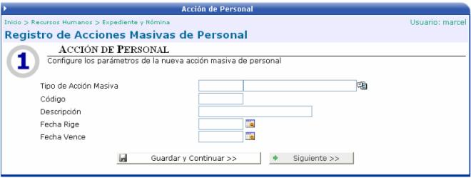
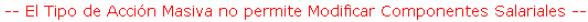
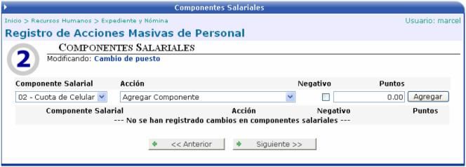
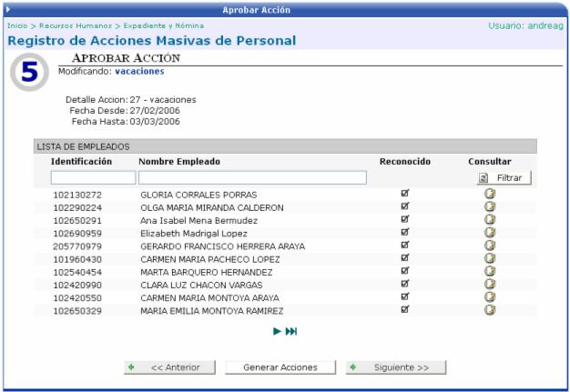
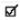
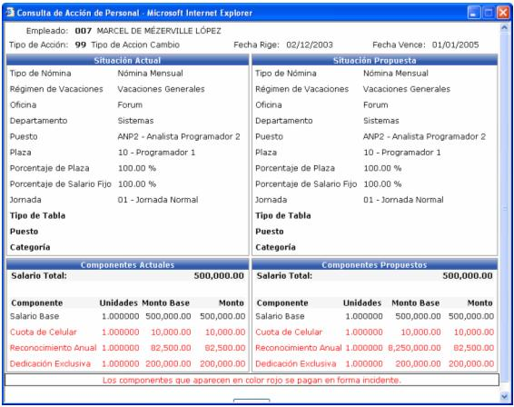

En esta opción el usuario puede crear acciones de personal masivamente para los empleados de la empresa. Dependiendo del tipo de acción masiva que se seleccione, así va a variar la información a ingresar.
Paso #1 Selección de la Acción de Personal:
Como primer paso se debe de seleccionar la acción masiva que se desea generar, ingresar la información solicitada y luego presionar el botón de GUARDAR Y CONTINUAR para continuar con el paso #2.

Paso #2 Componentes Salariales:
Dependiendo del tipo de acción que se haya seleccionado va a aparecer el siguiente mensaje:

o la siguiente pantalla, en donde el combo de componentes salariales va a desplegar todos los valores o solamente los permitidos para esa acción.

Paso #3 Trabajar con Periodos:
Dependiendo del tipo de acción que se haya
seleccionado va a aparecer el siguiente mensaje:  o la siguiente
pantalla, en donde el
usuario puede trabajar con un rango de fechas o periodos como un prefiltro
para generar los empleados que se verán afectados con la generación de
la acción. Una vez ingresados los datos se debe de presionar el botón
de GUARDAR Y CONTINUAR:
o la siguiente
pantalla, en donde el
usuario puede trabajar con un rango de fechas o periodos como un prefiltro
para generar los empleados que se verán afectados con la generación de
la acción. Una vez ingresados los datos se debe de presionar el botón
de GUARDAR Y CONTINUAR:

Paso #4 Seleccionar Empleados:
En este paso el usuario puede obtener los empleados de diferentes formas, ya sea por medio del centro funcional, por oficina/departamento, o por tipo de puesto. Luego de seleccionado y agregado el dato del filtro, se procede a generar los empleados presionando el botón GENERAR EMPLEADOS:

Paso #5 Generar las Acciones:
Una vez que se han generado los empleados, se proceden a generar las acciones:

Si se presiona este íconose puede observar la situación propuesta de la acción a generar:

Al presionar este ícono

se puede ingresar una justificación para no tomar en cuenta a este empleado en la generación de la acción. Si se quiere volver a incluir al empleado se vuelve a presionar el ícono:

Paso #6 Aplicar Acciones:
Este último paso corresponde a la aplicación de las acciones generadas en el paso anterior. Cabe aclarar que si el tipo de acción seleccionado tiene activo el check de Aplicación Automática (Tipos de Acción Masiva en Parámetros RH), dichas acciones se aplicarán automáticamente:

Si se presiona este ícono se puede observar como quedo conformada la acción:
